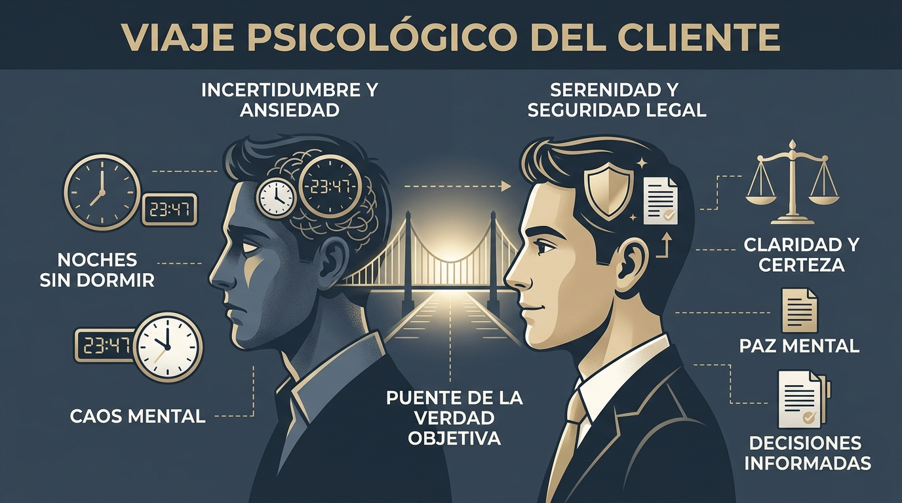

01 Radiografía del Buyer Persona (Laura Martín)
Este no es un simple perfil demográfico. Es la radiografía de la persona que, en uno de los momentos más vulnerables de su vida, recurrirá a Investiga24 buscando certeza.
📊 Ficha Demográfica & Socioeconómica
- Edad: 41 años (rango crítico 35–50 años con hipoteca, hijos y patrimonio).
- Género: Femenino (65–70% de las consultas particulares).
- Ingresos: 30.000 € – 60.000 € brutos/año (capacidad de compra reflexiva).
- Estado civil: Casada o convivencia de larga duración (+8-15 años).
- Hogar: Pareja, 1 o 2 hijos, vivienda en propiedad. Mucho que perder.
- Profesión: Responsable de RR.HH., funcionaria, docente, gerente PYME.
🌙 La Escena de las 23:47 (Fotografía Mental)
Toda la casa está en silencio. Su pareja dice que está trabajando o duerme en la otra habitación. Ella está a solas con el móvil en la mano. Abre Google. No quiere encontrar una aventura: quiere encontrar paz. No busca "pillar" a nadie; busca dejar de vivir con el estómago encogido por la sospecha.
💡 El Gran Cambio Estratégico
La competencia vende "Detectives privados y horas de seguimiento". Investiga24 vende la tranquilidad y el control que solo ofrece conocer la verdad objetiva.
02 Psicología Profunda: Qué Ocurre Antes de Buscar
Las personas no compran cuando tienen un problema; compran cuando el coste emocional de seguir igual supera el miedo a actuar.
Fase 1 — La Primera Grieta
No hay una prueba evidente. Hay una sensación: "Hay algo raro". Intenta justificarlo con el estrés o el cansancio de su pareja para proteger su estabilidad familiar.
Fase 2 — La Hipervigilancia y Agotamiento
Su mente nunca desconecta: mientras trabaja, conduce o atiende a sus hijos, analiza cada silencio, mensaje o cambio de horario. Su energía cognitiva se agota por completo.
Fase 3 — El Miedo a la Pérdida y las 3 Emociones Ocultas
• Vergüenza: De haber llegado al punto de necesitar un detective.
• Culpa: Teme haber fallado ella o estar siendo injusta.
• Esperanza de equivocarse: Desearía que el informe demostrara que no pasa nada.
❌ Lo que Destruye la Confianza
Tratarla como una clienta que quiere "venganza" o usar un tono sensacionalista/agresivo. Si se siente juzgada o presionada comercialmente, cerrará la web de inmediato.
✅ Lo que Genera Contratación Inmediata
Validar su dolor con empatía profesional, garantizar discreción absoluta desde el primer segundo y ofrecer un método riguroso con plenas garantías legales.
03 El Customer Journey Digital: Las 7 Fases
| Fase | Diálogo Interno de Laura | Lo que Busca en Google / IA | Respuesta de Investiga24 |
|---|---|---|---|
| 0. Negación | "Seguro que soy yo, estoy exagerando." | ¿Mi pareja está distante o es estrés? | Contenido educativo que normaliza la duda. |
| 1. Sospecha | "Algo no cuadra, no puedo dormir." | Señales de distanciamiento en pareja | Guías empáticas sobre el desgaste de no saber. |
| 2. Búsqueda Propia | "Voy a fijarme en sus horarios y móvil." | Cómo saber si me mienten | Explicar los riesgos legales y límites personales. |
| 3. Consulta a IA | "Necesito que alguien organice este caos." | ¿Sirven pruebas de detective en custodia? | Posicionamiento como fuente de referencia técnica. |
| 4. Búsqueda Comercial | "¿En quién puedo confiar de verdad?" | Detective privado habilitado infidelidad | Licencia TIP, equipo real, proceso transparente. |
| 5. Primera Llamada | "Tengo miedo de que me juzguen." | Llamada / WhatsApp confidencial | Escucha activa, serenidad y sin presión de venta. |
| 6. Decisión | "Necesito recuperar el control de mi vida." | Aceptación del plan operativo | Informe con validez judicial y acompañamiento. |
04 Las 5 Preguntas Críticas del Proceso de Compra
1. ¿Estoy haciendo lo correcto?
Buscar información cuando la duda afecta a tu salud o a tus hijos es un acto de responsabilidad, no de invasión.
2. ¿Puedo confiar en vosotros?
La confianza se demuestra con habilitación oficial T.I.P., años de experiencia pericial y secreto profesional.
3. ¿Cómo funciona realmente?
La transparencia reduce la ansiedad: explicar paso a paso qué se hace, qué límites existen y cuánto tiempo toma.
4. ¿Y si no se confirma nada?
Demostrar que no hay indicios es un resultado inmensamente valioso que permite recuperar la paz mental.
05 Voice of Customer: El Lenguaje que Convierte
El mejor copywriting no consiste en sonar sofisticado, sino en hacer que el cliente piense: "Parece que han escrito esto exactamente para mí".
🚫 Vocabulario a Eliminar (Sensacionalista)
- Pille a su pareja
- Descubra la infidelidad
- ¿Le están engañando?
- Espiamos / Vigilamos en secreto
- Cazamos a mentirosos
⭐ Vocabulario que Inspira Confianza
- Recupere la tranquilidad
- Decida con hechos y pruebas
- Cuando la incertidumbre pesa demasiado
- Información objetiva con rigor pericial
- Discreción y confidencialidad absoluta
💬 Diccionario Emocional de Laura
06 Los 10 Principios Inquebrantables de INVESTIGA24
El Manifiesto de INVESTIGA24
En INVESTIGA24 creemos que la incertidumbre puede llegar a ser tan desgastante como la propia verdad. Por eso nuestro trabajo no consiste en confirmar sospechas ni en alimentar el conflicto. Consiste en aportar información objetiva para que cada persona pueda tomar decisiones con serenidad. Cada investigación comienza escuchando, continúa con un método riguroso y se desarrolla con absoluta discreción, dentro del marco legal y con la posibilidad de aportar pruebas con validez judicial cuando el caso lo requiera. Nuestro equipo reúne experiencia en investigación y una profunda vocación de servicio, porque entendemos que antes de existir un expediente existe una historia personal. No medimos nuestro éxito por el número de investigaciones realizadas, sino por la confianza que ayudamos a recuperar. Ese es el compromiso que guía cada conversación, cada informe y cada decisión que tomamos.